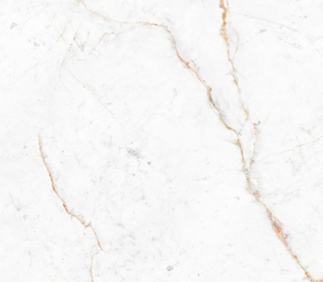
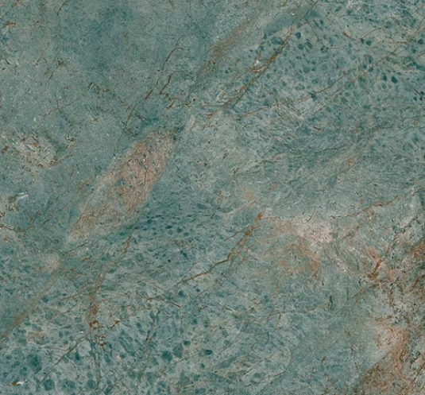
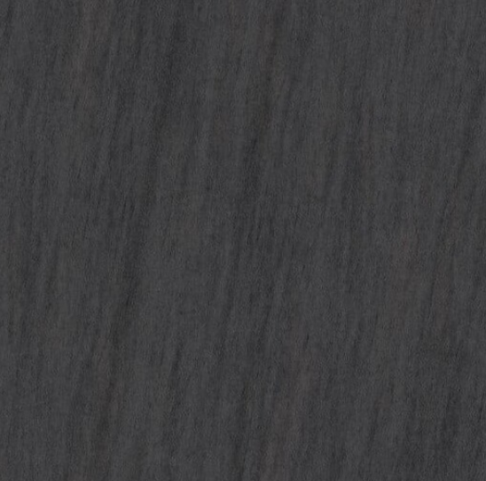
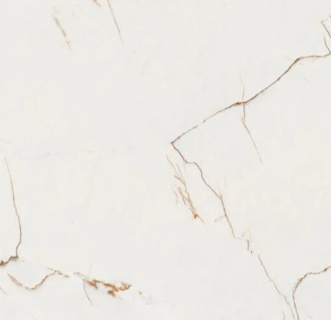
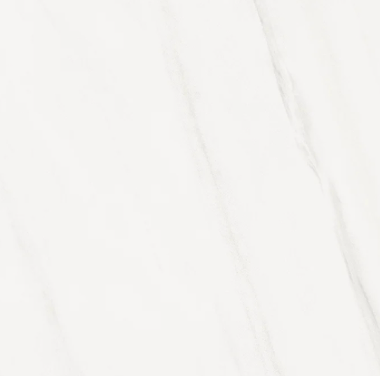
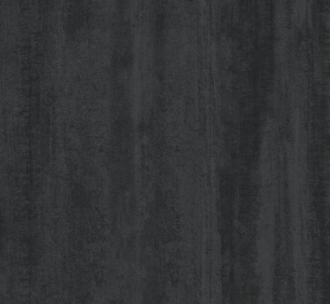
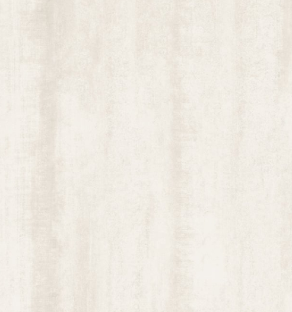
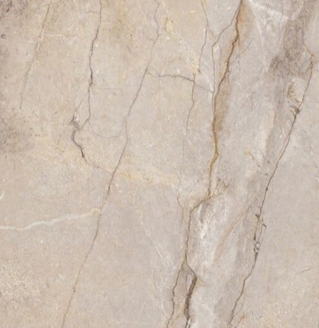
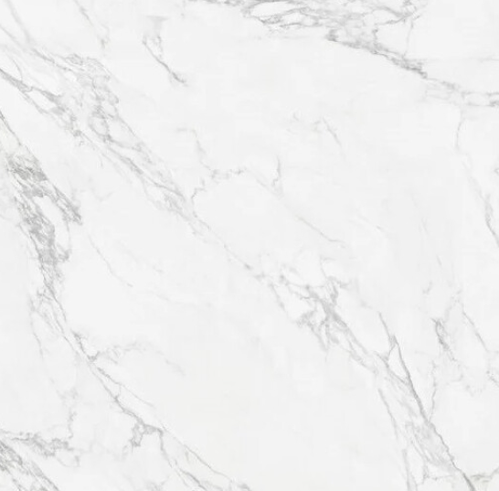
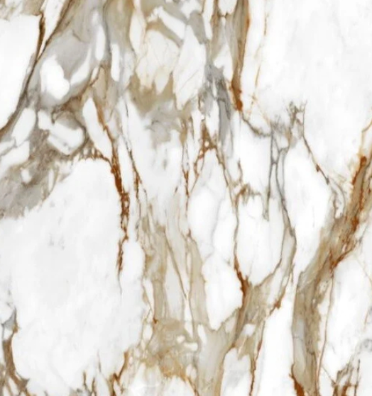

PORCELÁNICO
Precisión técnica en acabados.
Porcelánico para el lenguaje contemporáneo: superficies planas, durable y con un carácter neutro que empata con el diseño arquitectónico.
Una alternativa de materialidad para estructuras minimalistas y soluciones de alto tránsito.
Muestrario de Colores









